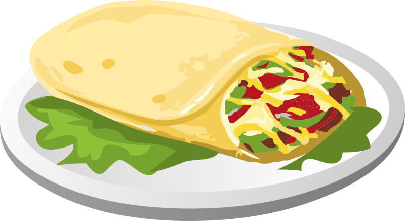

Cachupa is Cape Verde's national dish. It's a rich stew of hominy, beans, seasoned meats and vegetables.
Every family has their own version, and even within families, there are different variations. The Reason why it is my favorite dish is because it's a famous Dish in the country I was born (Cape Verde) and every time I eat this dish it reminds me of home.
Ingredients
Meat
Hominy and Beans
Vegetables
Spices and Seasonings
Corned beef
Salt Pork
Chourico
Corn
Dried Cranberry Beans
Feijão Pedra
White lima Beans
Mandioca
Sweet potatoes
Squash
Carrots
Crushed Garlic
Yellow Onions
Smoked Paprika
Bay leaf
Salt
Pepper
Bouillon Cube
Here is a video Tutorial
Here is Ethan Recipe
This is Ethan Favorite dish because he loves spanish food and burrito is one of his favorite dish to make.

Black beans
Brown rice
Guacamole
Grilled chicken
Chili powder
Cumin
Here is Ericsen Recipe
This is Ericsen Favorite dish because is grandma makes it occasionaly but it also reminds him of Cape Verde